1 / 3

Apron made from programmed design
2 / 3

Javascript generated design
3 / 3

Customizable bracelet using OpenJscad
I took two semester long courses focused on Computer Science in my sophomore year at Lick-Wilmerding High School.
Computing 1 is a semester-long Techincal Arts course offered at LWHS (Lick-Wilmerding). In the class, we learned about
the basics of computer science through Scratch and p5 (javascript). In many of our projects, we interwove art with computer programming,
demonstrating how coding is filled with creativity and self-expression. We generated visual art, designed textiles, created animations,
made custon software, and physically fabricated our designs on machines like the laser cutter, 3d printer, and CNC mill. Through all our projects,
we developed a strong foundation in computer science concepts.
Computing 2 PPP (Public Purpose Program) is another semester-long Technical Arts course offered at LWHS that has a
community focused aspect. In this class, we continued to deepen our understanding of computer science. We also focused more on what computers are,
learning about binary, the history of the computer, digital logic, memory, and more. We were able to have a lot more freedom with this course- we
were able to choose a programming language research and use to make a project of our choice.
In both classes, we practiced collaboration; many of our large projects required that we work in group or pairs, preparing us for the culture
at jobs where people work in teams to create awesome products. In our final project,to fulfill the PPP aspect, we were tasked to make a website
or app that would benefit the community. We had to learn a lot about UI/UX, communication with clients and overall planning.
To get comfortable with using p5 and build our foundation of javascript, we practiced creating various shapes in P5 with varying sizes, colors, and line weight.
Code for P5 Shapes Practice:
function setup() {
createCanvas(600,600);
background(150)
fill(255, 204, 0);
stroke(255)
strokeWeight(5)
ellipse(350, 350, 300, 300);
stroke(51)
strokeWeight(5)
fill(color(0, 0, 255));
rect(350, 350, 100, 100);
stroke(35);
line(250,200,500,24);
strokeWeight(20);
line(50,200,50,60);
line(50,60,500,150);
strokeWeight(5)
stroke(255)
arc(300, 155, 50, 50, HALF_PI+HALF_PI+QUARTER_PI,QUARTER_PI+QUARTER_PI+QUARTER_PI);
noFill();
strokeWeight(15)
arc(50, 55, 50, 50, HALF_PI, TWO_PI - QUARTER_PI);
bezier(150, 253, 354, 175, 1, 263, 168, 134);
stroke(color(0,0,255));
strokeWeight(2);
beginShape();
vertex(90,333);
vertex(134,360);
vertex(180,321);
vertex(233,360);
vertex(240,330);
vertex(260,400);
vertex(138,407);
vertex(90,333);
endShape(close);
noFill();
beginShape();
vertex(531, 540);
bezierVertex(550, 485, 570, 575, 538, 544);
bezierVertex(534,574,483,495,530,540);
endShape();
triangle(230, 275, 258, 220, 286, 275);
triangle(230, 575, 258, 420, 286, 575);
triangle(330, 275, 258, 120, 186, 475);
}
function draw() {
noStroke();
fill(0);
rect(0,0,75,20);
fill(150);
text("("+mouseX + ", "+mouseY+")", 5, 15);
}
We also began to experiment with conditionals, functions, and loops in p5. With the animation project, not only did we apply what we learned from previous assignments by creating shapes, but we also had to apply new ideas like conditionals.ani
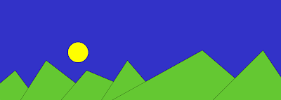Code for p5 Animation:
var sunX=1500
var sunY=500
function setup() {
createCanvas(1500,500);
}
function draw() {
background(255,140,0);
sun();
mountains();
sunX=sunX-2
sunY=sunY-2
if(sunX < 1050)
{
sunX = sunX-2
}
if(sunY < 200)
{
sunY=sunY+2
background(155,258,258);
sun();
mountains();
}
if(sunX < 500)
{
sunY= sunY+4
background(50,50,200);
sun();
mountains();
}
}
function mountains(){
fill('rgb(100,200,50)')
triangle(-100, 500, 75, 350, 186, 500);
triangle(100, 500,228, 300, 486, 500);
triangle(300, 500, 428, 350, 786, 500);
triangle(500,500,630,300,800,500);
triangle(550,500,1000,250,1350,550);
triangle(1050,500,1300,250,1500,550);
}
function sun(){
fill('yellow');
ellipseMode(CENTER)
ellipse(sunX,sunY,100);
}
For this project, we were prompted to design and program a digital learning app that enables a learner to explore a topic of our choice. We were required to include:
Objects, HTML / User Interface Elements, data/APIs, and/or sound.
Because I was learning about the industrialization in history class, I decided to make an RPG game that is about the life of a worker in a factory during the industrialization. The player has to choose what to sacrifice (time, money, happiness, or health).
Each action they choose either deducts or adds to one of those things and they are trying to not get to zero on any of them or else it would lead to death.
It shows how during the industrialization, working class people didn't really have a chance of a happy life or a rich life because they were never paid enough
and they had to work for long hours, which caused many health problems.
Two new-to-me topics I included:
HTML / User Interface Elements- buttons that are interactive and respond to user
Data/APIs/Images- images that appeared when a certain event happened
Images from:
stethoscope
beer
coin
Screenshots of screens
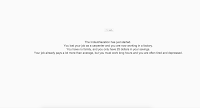 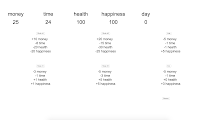 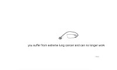 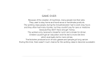 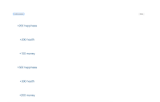The code is extremely long, but you can click here to see the code
11/21/16: I found out how buttons work and how to make it so that clicking a button changes the value that is shown. I also learned how each button has its own function and my code is probably gonna end up really long. I originally had a problem making it so that the values would refresh every time I clicked a button. With the help of Ms. Freed, I learned that I had to redo the background every time.
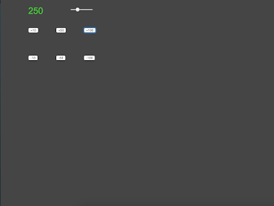
11/29/16: I was able to change my code so that there would be four values rather than just one. Thanks to Cal,
I learned how to make my code so that when if one of the values was going to become negative when a certain button was pressed,
nothing would happen. So now I don't have to worry that the time would go to negative and I can apply this to when (for example)
the health goes down to O and a certain action happens when this is true. I was also able to come up with different scenarios.
12/1/16:
So I came up with the intro/context and the next day and restart button. I made a restart button that would restart everything as well
as a value that would count how many days went by. I also made it so that when the time goes down to zero, it shows "next day" and then
resets the time and counts a day that passed. I just need to make something to track the highest score (most days).
| 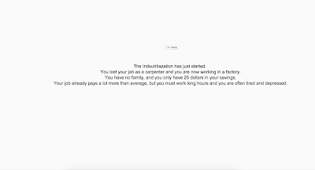 | 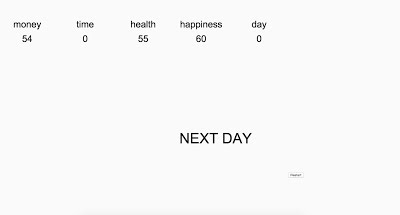 |
|---|---|
intro, context/start page |
what happens when time goes down to zero. Also, it will restart the time, but keep all the other values. |
| 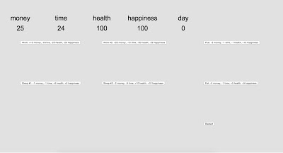 | 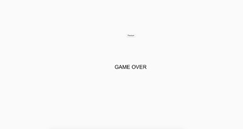 |
has variable that counts days |
this happens any time the values go down to zero (except for time) and you can restart the game. |
12/6/16:
I added in endings and images that correspond with the scenarios endings. For the one when the player runs out of money,
a coin image shows. For the happiness, a beer image shows. For the health, the stethoscope image shows. I now have a new-to-me
topic which is how to import images. I used flickr to find images without copyright restrictions. I want to make a highscore keeper,
but I feel like that might be too hard.
For the money: |
For the happiness: |
For the health: |
|---|---|---|
| 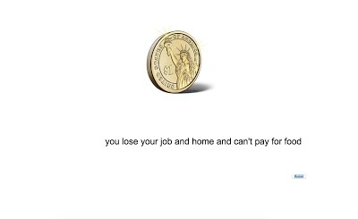 | 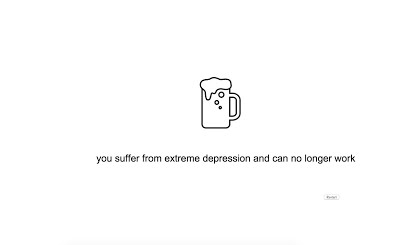 | 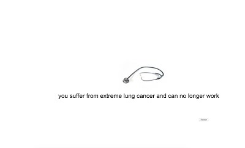 |
12/7/16:
I made a page that shows achievements ( like they reach 100+ money or 200+ happiness). I also made it so that
you could go back to the menu and if you did, you would not have to restart. I am halfway through the achievements.
The moment you reach that achievement, a text shows it then disappears. I just have to make it so that it keeps track of which achievements
you have already gotten and display it on the achievements page.
Ex Achievement: |
Menu Page after exiting from the game: |
|---|---|
| 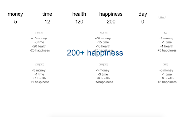 | 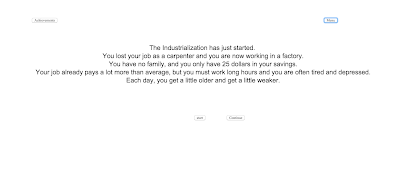 |
12/9/16:
I was able to debug my code. With the help of Ms. Freed, I found out that the reason my buttons kept on showing was
because I was constantly making more. Also, I did my achievements!!!. I have, in total, 6 achievements and I was able
to have the code track which achievements have already been achieved and display those on the achievements page. Also,
I made it so that the achievement would keep popping up after every time it was achieved. For example, if my achievement
is 200+ happiness and I achieve it at 200, and I press a button and I get a 205 happiness, the achievement won't show up again.

For our final projects,
For our final projects,